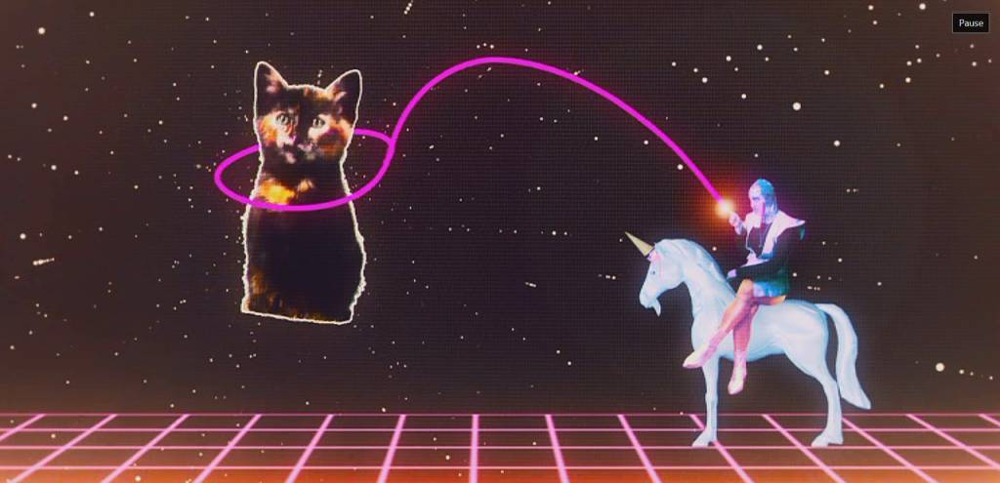
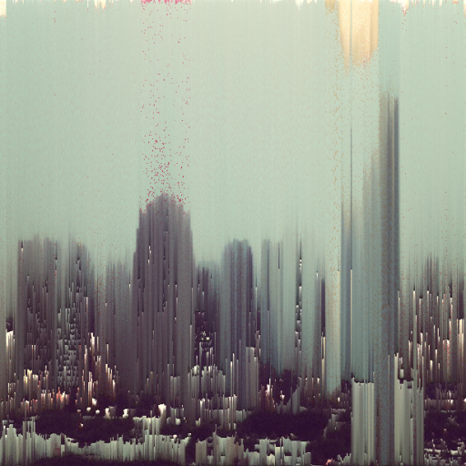
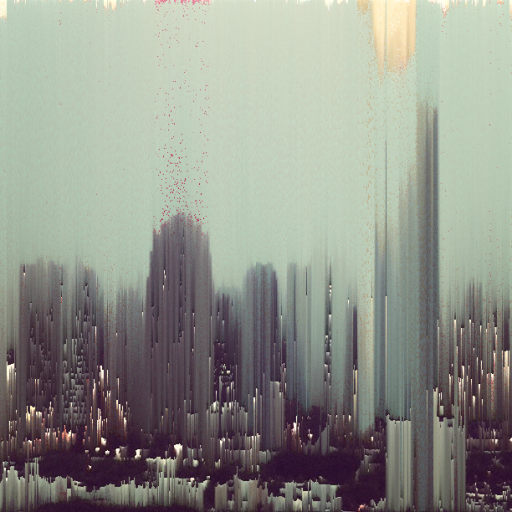
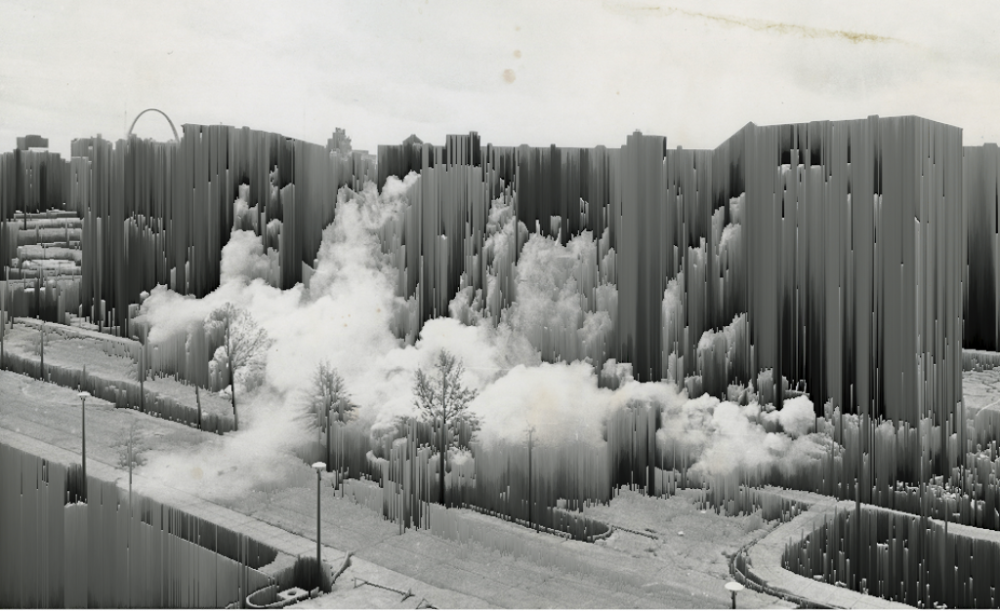
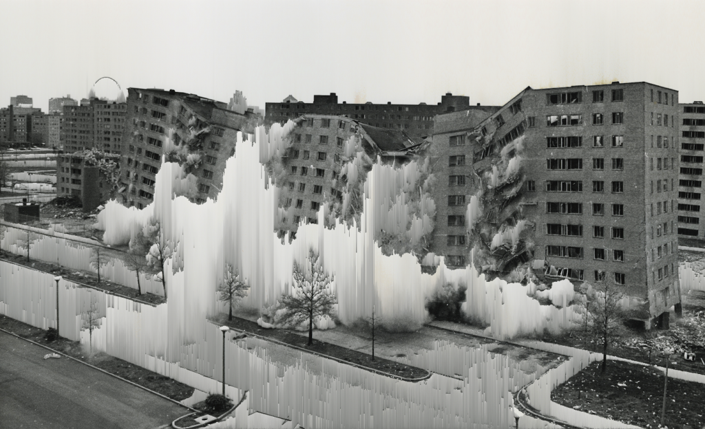
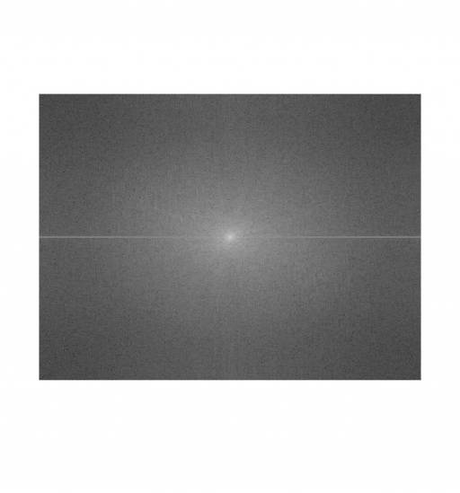

Oh Hai

Week 3 Homework
Pixel Sort & Unsort
 

 
Fourier Image Coding

Python Code for Fourier Coding
from matplotlib import pyplot
import numpy
import os.path
from __future__ import division
output_path = "/Users/Omer/Dropbox/NYU/Aesthetics of Automation/HW 03/"
# Save Function
save = lambda name, x : misc.imsave(os.path.join(output_path, name), x)
img = misc.imread("/Users/Omer/Desktop/Unfortunately.png")
pyplot.imshow(img)
fg = ndimage.fourier.fourier_gaussian(img,0.5)
pyplot.imshow(fg)
save("fg.png", fg)
for n in xrange(10):
f = 0.05 + n*0.05
fg = ndimage.fourier.fourier_gaussian(img,f)
save("fg"+str(f)+".png", fg)
gf = ndimage.fourier.fourier_gaussian(fg,0.5)
pyplot.imshow(gf)
Human Entropy Collection
Not developed yet